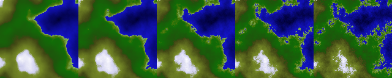

14.3. Modifying the heightmap
Those are advanced operations involving several or all map cells.
Add hills
This function adds a hill (a half spheroid) at given position.
void TCODHeightMap::addHill(float x, float y, float radius, float height)
void TCOD_heightmap_add_hill(TCOD_heightmap_t *hm, float x, float y, float radius, float height)
heightmap_add_hill(hm, x, y, radius, height)
| Parameter | Description |
|---|---|
| hm | In the C version, the address of the heightmap struct returned by the creation function. |
| x,y | Coordinates of the center of the hill. 0 <= x < map width 0 <= y < map height |
| radius | The hill radius. |
| height | The hill height. If height == radius or -radius, the hill is a half-sphere. |
Dig hills
This function takes the highest value (if height > 0) or the lowest (if height < 0) between the map and the hill.
It's main goal is to carve things in maps (like rivers) by digging hills along a curve.
void TCODHeightMap::digHill(float hx, float hy, float hradius, float height)
void TCOD_heightmap_dig_hill(TCOD_heightmap_t *hm, float x, float y, float radius, float height)
heightmap_dig_hill(hm, x, y, radius, height)
| Parameter | Description |
|---|---|
| hm | In the C version, the address of the heightmap struct returned by the creation function. |
| x,y | Coordinates of the center of the hill. 0 <= x < map width 0 <= y < map height |
| radius | The hill radius. |
| height | The hill height. Can be < 0 or > 0 |
Simulate rain erosion
This function simulates the effect of rain drops on the terrain, resulting in erosion patterns.
void TCODHeightMap::rainErosion(int nbDrops,float erosionCoef,float sedimentationCoef,TCODRandom *rnd)
void TCOD_heightmap_rain_erosion(TCOD_heightmap_t *hm, int nbDrops,float erosionCoef,float sedimentationCoef,TCOD_random_t rnd)
heightmap_rain_erosion(hm, nbDrops,erosionCoef,sedimentationCoef,rnd=0)
| Parameter | Description |
|---|---|
| hm | In the C version, the address of the heightmap struct returned by the creation function. |
| nbDrops | Number of rain drops to simulate. Should be at least width * height. |
| erosionCoef | Amount of ground eroded on the drop's path. |
| sedimentationCoef | Amount of ground deposited when the drops stops to flow |
| rnd | RNG to use, NULL for default generator. |
Do a generic transformation
This function allows you to apply a generic transformation on the map, so that each resulting cell value is the weighted sum of several neighbour cells. This can be used to smooth/sharpen the map. See examples below for a simple horizontal smoothing kernel : replace value(x,y) with 0.33*value(x-1,y) + 0.33*value(x,y) + 0.33*value(x+1,y).To do this, you need a kernel of size 3 (the sum involves 3 surrounding cells). The dx,dy array will contain :
dx=-1,dy = 0 for cell x-1,y
dx=1,dy=0 for cell x+1,y
dx=0,dy=0 for current cell (x,y)
The weight array will contain 0.33 for each cell.
void TCODHeightMap::kernelTransform(int kernelSize, int *dx, int *dy, float *weight, float minLevel,float maxLevel)
void TCOD_heightmap_kernel_transform(TCOD_heightmap_t *hm, int kernelsize, int *dx, int *dy, float *weight, float minLevel,float maxLevel)
heightmap_kernel_transform(hm, kernelsize, dx, dy, weight, minLevel,maxLevel)
| Parameter | Description |
|---|---|
| hm | In the C version, the address of the heightmap struct returned by the creation function. kernelSize Number of neighbour cells involved. |
| dx,dy | Array of kernelSize cells coordinates. The coordinates are relative to the current cell (0,0) is current cell, (-1,0) is west cell, (0,-1) is north cell, (1,0) is east cell, (0,1) is south cell, ... |
| weight | Array of kernelSize cells weight. The value of each neighbour cell is scaled by its corresponding weight |
| minLevel | The transformation is only applied to cells which value is >= minLevel. |
| maxLevel | The transformation is only applied to cells which value is <= maxLevel. |
Example:
int dx [] = {-1,1,0};
int dy[] = {0,0,0};
float weight[] = {0.33f,0.33f,0.33f};
heightmap->kernelTransform(heightmap,3,dx,dy,weight,0.0f,1.0f);
int dx [] = {-1,1,0};
int dy[] = {0,0,0};
float weight[] = {0.33f,0.33f,0.33f};
TCOD_heightMap_kernel_transform(heightmap,3,dx,dy,weight,0.0f,1.0f);
Add a Voronoi diagram
This function adds values from a Voronoi diagram to the map.
void TCODHeightMap::addVoronoi(int nbPoints, int nbCoef, float *coef,TCODRandom *rnd)
void TCOD_heightmap_add_voronoi(TCOD_heightmap_t *hm, int nbPoints, int nbCoef, float *coef,TCOD_random_t rnd)
heightmap_add_voronoi(hm, nbPoints, nbCoef, coef,rnd=0)
| Parameter | Description |
|---|---|
| hm | In the C version, the address of the heightmap struct returned by the creation function. |
| nbPoints | Number of Voronoi sites. |
| nbCoef | The diagram value is calculated from the nbCoef closest sites. |
| coef | The distance to each site is scaled by the corresponding coef. Closest site : coef[0], second closest site : coef[1], ... |
| rnd | RNG to use, NULL for default generator. |
Add a fbm
void TCODHeightMap::addFbm(TCODNoise *noise,float mulx, float muly, float addx, float addy, float octaves, float delta, float scale)
void TCOD_heightmap_add_fbm(TCOD_heightmap_t *hm, TCOD_noise_t noise,float mulx, float muly, float addx, float addy, float octaves, float delta, float scale)
heightmap_add_fbm(hm, noise,mulx, muly, addx, addy, octaves, delta, scale)
| Parameter | Description |
|---|---|
| hm | In the C version, the address of the heightmap struct returned by the creation function. |
| noise | The 2D noise to use. |
| mulx, | muly / addx, addy The noise coordinate for map cell (x,y) are (x + addx)*mulx / width , (y + addy)*muly / height. Those values allow you to scale and translate the noise function over the heightmap. |
| octaves | Number of octaves in the fbm sum. |
| delta | / scale The value added to the heightmap is delta + noise * scale. |
| noise | is between -1.0 and 1.0 |
Scale with a fbm
This function works exactly as the previous one, but it multiplies the resulting value instead of adding it to the heightmap.
void TCODHeightMap::scaleFbm(TCODNoise *noise,float mulx, float muly, float addx, float addy, float octaves, float delta, float scale)
void TCOD_heightmap_scale_fbm(TCOD_heightmap_t *hm, TCOD_noise_t noise,float mulx, float muly, float addx, float addy, float octaves, float delta, float scale)
heightmap_scale_fbm(hm, noise,mulx, muly, addx, addy, octaves, delta, scale)
Dig along a Bezier curve
This function carve a path along a cubic Bezier curve using the digHill function.
Could be used for roads/rivers/...
Both radius and depth can vary linearly along the path.
void TCODHeightMap::digBezier(int px[4], int py[4], float startRadius, float startDepth, float endRadius, float endDepth)
void TCOD_heightmap_dig_bezier(TCOD_heightmap_t *hm, int px[4], int py[4], float startRadius, float startDepth, float endRadius, float endDepth)
heightmap_dig_bezier(hm, px, py, startRadius, startDepth, endRadius, endDepth)
| Parameter | Description |
|---|---|
| hm | In the C version, the address of the heightmap struct returned by the creation function. |
| px,py | The coordinates of the 4 Bezier control points. |
| startRadius | The path radius in map cells at point P0. Might be < 1.0 |
| startDepth | The path depth at point P0. |
| endRadius | The path radius in map cells at point P3. Might be < 1.0 |
| endDepth | The path depth at point P3. |
Generate a map with mid-point displacement
This algorithm generates a realistic fractal heightmap using the diamond-square (or random midpoint displacement) algorithm.
The roughness range should be comprised between 0.4 and 0.6. The image below show the same map with roughness varying from 0.4 to 0.6.

It's also a good habit to normalize the map after using this algorithm to avoid unexpected heights.
void TCODHeightMap::midPointDisplacement(TCODRandom *rng=NULL,float roughness=0.45f)
void TCOD_heightmap_mid_point_displacement(TCOD_heightmap_t *hm, TCOD_random_t rnd, float roughness)
heightmap_mid_point_displacement(hm, rng, roughness)
| Parameter | Description |
|---|---|
| hm | In the C and python version, the adress of the heightmap struct returned by the creation function. |
| rng | Random number generation to use, or NULL/0 to use the default one. |
| roughness | Map roughness. |